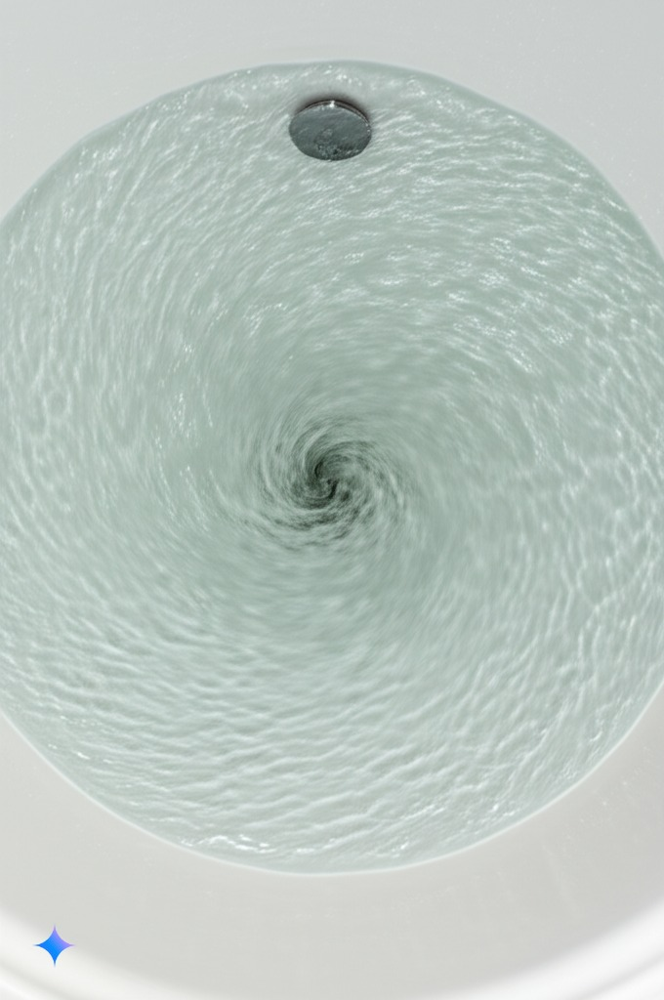
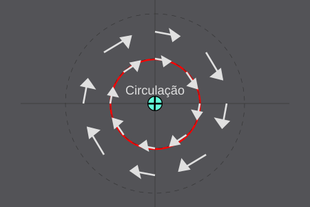
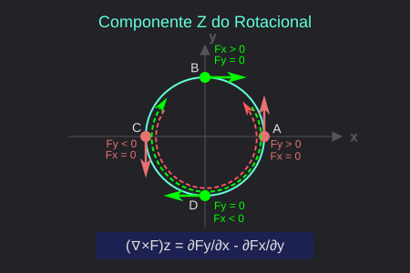
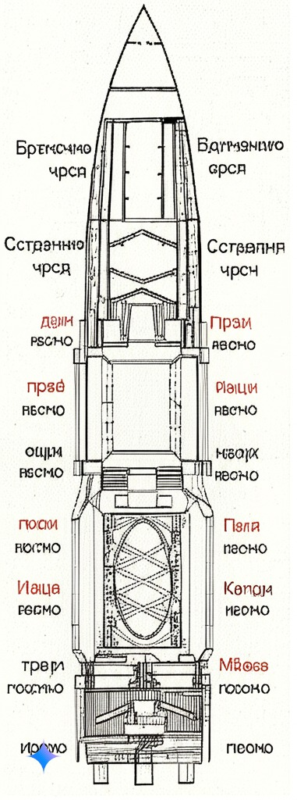
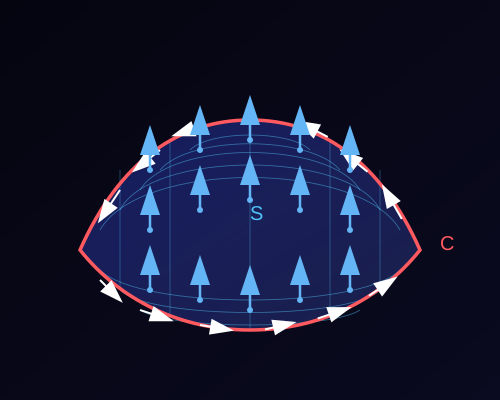

O rotacional de um campo vetorial \(\vec{F} = (F_x, F_y, F_z)\) é definido como:
$$ \nabla \times \vec{F} \;=\; \begin{vmatrix} \hat{i} & \hat{j} & \hat{k} \\ \frac{\partial}{\partial x} & \frac{\partial}{\partial y} & \frac{\partial}{\partial z} \\ F_x & F_y & F_z \end{vmatrix} $$
Expandindo o determinante:
$$ \nabla \times \vec{F} \;=\; \left(\frac{\partial F_z}{\partial y} - \frac{\partial F_y}{\partial z},\; \frac{\partial F_x}{\partial z} - \frac{\partial F_z}{\partial x},\; \frac{\partial F_y}{\partial x} - \frac{\partial F_x}{\partial y}\right) $$


$$(\nabla \times \vec{F})_z = \frac{\partial F_y}{\partial x} - \frac{\partial F_x}{\partial y}$$


Pense em um campo de velocidade \(\vec{V}\) gerado por um ventilador no centro de uma sala:
Estas perguntas não exigem cálculos, apenas interpretação física do conceito.
Considere o campo vetorial que modela um redemoinho em torno do eixo z:
$\vec{F}(x,y,z) = (-y, x, 0)$
Calcule o rotacional deste campo e interprete fisicamente o resultado.
Dica: Visualize o movimento circular em torno do eixo z e observe o padrão de "giro".
Calculando o rotacional de $\vec{F}(x,y,z) = (-y, x, 0)$:
$\nabla \times \vec{F} = \begin{vmatrix} \hat{i} & \hat{j} & \hat{k} \\ \frac{\partial}{\partial x} & \frac{\partial}{\partial y} & \frac{\partial}{\partial z} \\ -y & x & 0 \end{vmatrix}$
$\nabla \times \vec{F} = \hat{i}\left(\frac{\partial 0}{\partial y} - \frac{\partial x}{\partial z}\right) + \hat{j}\left(\frac{\partial -y}{\partial z} - \frac{\partial 0}{\partial x}\right) + \hat{k}\left(\frac{\partial x}{\partial x} - \frac{\partial -y}{\partial y}\right)$
$\nabla \times \vec{F} = \hat{i}(0 - 0) + \hat{j}(0 - 0) + \hat{k}(1 - (-1)) = \hat{k}(2) = (0, 0, 2)$
Interpretação física: O rotacional aponta no eixo z com magnitude 2, indicando uma rotação no sentido anti-horário em torno deste eixo. Esse campo tem vorticidade constante, como um fluido girando uniformemente.
Considere o campo vetorial radial:
$\vec{F}(x,y,z) = (x, y, z)$
Calcule o rotacional deste campo e explique por que ele é irrotacional. Encontre uma função potencial φ tal que $\vec{F} = \nabla \phi$.
Dica: Campos gradientes são sempre irrotacionais.
Calculando o rotacional de $\vec{F}(x,y,z) = (x, y, z)$:
$\nabla \times \vec{F} = \begin{vmatrix} \hat{i} & \hat{j} & \hat{k} \\ \frac{\partial}{\partial x} & \frac{\partial}{\partial y} & \frac{\partial}{\partial z} \\ x & y & z \end{vmatrix}$
$\nabla \times \vec{F} = \hat{i}\left(\frac{\partial z}{\partial y} - \frac{\partial y}{\partial z}\right) + \hat{j}\left(\frac{\partial x}{\partial z} - \frac{\partial z}{\partial x}\right) + \hat{k}\left(\frac{\partial y}{\partial x} - \frac{\partial x}{\partial y}\right)$
$\nabla \times \vec{F} = \hat{i}(0 - 0) + \hat{j}(0 - 0) + \hat{k}(0 - 0) = (0, 0, 0)$
Função potencial: $\phi(x,y,z) = \frac{x^2 + y^2 + z^2}{2}$
Verificação: $\nabla \phi = \left(\frac{\partial \phi}{\partial x}, \frac{\partial \phi}{\partial y}, \frac{\partial \phi}{\partial z}\right) = (x, y, z) = \vec{F}$
Interpretação: O rotacional é zero em todos os pontos, portanto não há tendência de "giro". Este campo representa um fluxo puramente expansivo, apontando radialmente para fora a partir da origem.
O rotacional se conecta com outros conceitos através do Teorema de Stokes:
$\oint_C \vec{F} \cdot d\vec{r} = \iint_S (\nabla \times \vec{F}) \cdot \hat{n} \, dS$
Este teorema relaciona a circulação do campo ao longo de uma curva fechada com o fluxo do rotacional através da superfície delimitada por esta curva.
